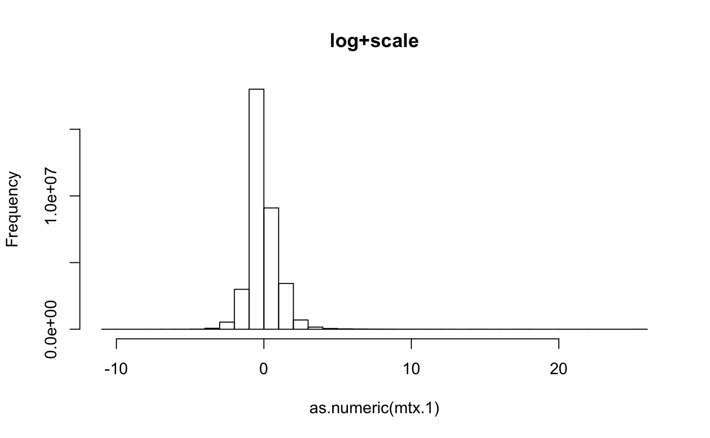
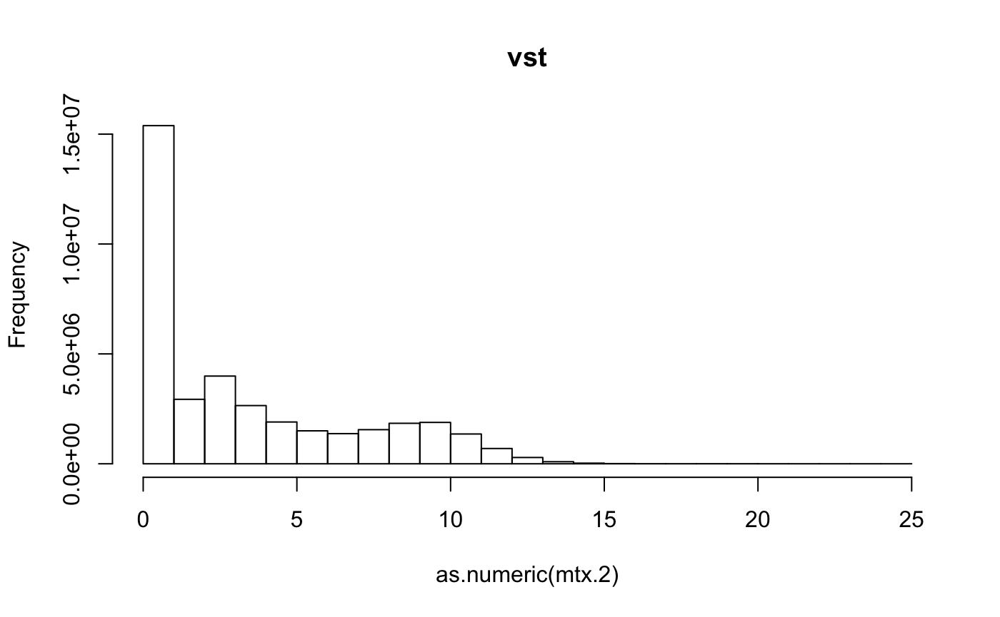

sage.RmdSage provides RNA-seq expression files from the AMP-AD consortium. They appear to be in a standard format: tab-delimited, 4 summary lines, Ensembl identifiers in the first column.
This vignette shows how to - read a file into a data.frame - perform some minor transformations on that data.frame to make it ready for rnaSeqNormalizer - choose parameters and perform the desired normalization - do some visual exploration of the results
library(rnaSeqNormalizer)
#> Loading required package: org.Hs.eg.db
#> Loading required package: AnnotationDbi
#> Loading required package: stats4
#> Loading required package: BiocGenerics
#> Loading required package: parallel
#>
#> Attaching package: 'BiocGenerics'
#> The following objects are masked from 'package:parallel':
#>
#> clusterApply, clusterApplyLB, clusterCall, clusterEvalQ, clusterExport, clusterMap, parApply,
#> parCapply, parLapply, parLapplyLB, parRapply, parSapply, parSapplyLB
#> The following objects are masked from 'package:stats':
#>
#> IQR, mad, sd, var, xtabs
#> The following objects are masked from 'package:base':
#>
#> anyDuplicated, append, as.data.frame, basename, cbind, colnames, dirname, do.call, duplicated, eval,
#> evalq, Filter, Find, get, grep, grepl, intersect, is.unsorted, lapply, Map, mapply, match, mget, order,
#> paste, pmax, pmax.int, pmin, pmin.int, Position, rank, rbind, Reduce, rownames, sapply, setdiff, sort,
#> table, tapply, union, unique, unsplit, which, which.max, which.min
#> Loading required package: Biobase
#> Welcome to Bioconductor
#>
#> Vignettes contain introductory material; view with 'browseVignettes()'. To cite Bioconductor, see
#> 'citation("Biobase")', and for packages 'citation("pkgname")'.
#> Loading required package: IRanges
#> Loading required package: S4Vectors
#>
#> Attaching package: 'S4Vectors'
#> The following object is masked from 'package:base':
#>
#> expand.grid
#>
#> Loading required package: EnsDb.Hsapiens.v79
#> Loading required package: ensembldb
#> Loading required package: GenomicRanges
#> Loading required package: GenomeInfoDb
#> Loading required package: GenomicFeatures
#> Loading required package: AnnotationFilter
#>
#> Attaching package: 'ensembldb'
#> The following object is masked from 'package:stats':
#>
#> filter
#> Loading required package: DESeq
#> Loading required package: locfit
#> locfit 1.5-9.1 2013-03-22
#> Loading required package: lattice
#> Welcome to 'DESeq'. For improved performance, usability and functionality, please consider migrating to
#> 'DESeq2'.Create an instance of the normalizer, supplying it with a small example expression matrix. We expect that it will have gene identifiers as row names and sample identifiers as column names.
Note that the file used here, ROSMAP_all_counts_matrix.txt is very large, and is not included in the package. This example therefore, works verbatim only on my build system. To reproduce this chunk of code, you must provide your own filepath variable.
filepath <- "~/github/rnaSeqNormalizer/inst/extdata/sage/ROSMAP_all_counts_matrix.txt"
stopifnot(file.exists(filepath))
tbl.mt <- read.table(filepath, sep="\t", as.is=TRUE, header=TRUE, nrow=-1)
tbl.mt <- tbl.mt[-c(1:4),] # remove first four lines, which have summary statistics
colnames(tbl.mt)[1] <- "ensembl_id" # give the first column the name we expect
tbl.mt$ensembl_id <- sub("\\.[0-9]+", "", tbl.mt$ensembl_id) # remove version suffixes from the idsWe demonstrate two normalizations. The results are quite different. First the “log+scale” normalization proposed by Max Robinson and Michael Wainberg.
x <- rnaSeqNormalizer(tbl.mt, algorithm="log+scale", duplicate.selection.statistic="mean")
mtx.1 <- getNormalizedMatrix(x)
fivenum(mtx.1)Now use a standard Bioconductor algorithm using the DESeq package, vst (variance stabilization transformation)
x <- rnaSeqNormalizer(tbl.mt, algorithm="vst", duplicate.selection.statistic="sd")
mtx.2 <- getNormalizedMatrix(x)
#> Warning in .vst.normalize(mtx): the vst algorithm needs a matrix of integer counts; converting...
fivenum(mtx.2)Compare these two techniques:
hist(as.numeric(mtx.1), main="log+scale")
hist(as.numeric(mtx.2), main="vst")
sessionInfo()
#> R version 3.6.1 (2019-07-05)
#> Platform: x86_64-apple-darwin15.6.0 (64-bit)
#> Running under: macOS Mojave 10.14.5
#>
#> Matrix products: default
#> BLAS: /Library/Frameworks/R.framework/Versions/3.6/Resources/lib/libRblas.0.dylib
#> LAPACK: /Library/Frameworks/R.framework/Versions/3.6/Resources/lib/libRlapack.dylib
#>
#> locale:
#> [1] en_US.UTF-8/en_US.UTF-8/en_US.UTF-8/C/en_US.UTF-8/en_US.UTF-8
#>
#> attached base packages:
#> [1] parallel stats4 stats graphics grDevices utils datasets methods base
#>
#> other attached packages:
#> [1] rnaSeqNormalizer_1.0.12 DESeq_1.36.0 lattice_0.20-38 locfit_1.5-9.1
#> [5] EnsDb.Hsapiens.v79_2.99.0 ensembldb_2.8.1 AnnotationFilter_1.8.0 GenomicFeatures_1.36.4
#> [9] GenomicRanges_1.36.1 GenomeInfoDb_1.20.0 org.Hs.eg.db_3.8.2 AnnotationDbi_1.46.1
#> [13] IRanges_2.18.3 S4Vectors_0.22.1 Biobase_2.44.0 BiocGenerics_0.30.0
#> [17] BiocStyle_2.12.0
#>
#> loaded via a namespace (and not attached):
#> [1] httr_1.4.1 splines_3.6.1 bit64_0.9-7 assertthat_0.2.1
#> [5] BiocManager_1.30.9 blob_1.2.0 GenomeInfoDbData_1.2.1 Rsamtools_2.0.3
#> [9] yaml_2.2.0 progress_1.2.2 pillar_1.4.2 RSQLite_2.1.2
#> [13] backports_1.1.5 digest_0.6.21 RColorBrewer_1.1-2 XVector_0.24.0
#> [17] htmltools_0.4.0 Matrix_1.2-17 XML_3.98-1.20 pkgconfig_2.0.3
#> [21] biomaRt_2.40.5 genefilter_1.66.0 bookdown_0.14 zlibbioc_1.30.0
#> [25] xtable_1.8-4 BiocParallel_1.18.1 tibble_2.1.3 annotate_1.62.0
#> [29] SummarizedExperiment_1.14.1 lazyeval_0.2.2 survival_2.44-1.1 magrittr_1.5
#> [33] crayon_1.3.4 memoise_1.1.0 evaluate_0.14 fs_1.3.1
#> [37] MASS_7.3-51.4 tools_3.6.1 prettyunits_1.0.2 hms_0.5.2
#> [41] matrixStats_0.55.0 stringr_1.4.0 DelayedArray_0.10.0 Biostrings_2.52.0
#> [45] compiler_3.6.1 pkgdown_1.4.1 rlang_0.4.0 grid_3.6.1
#> [49] RCurl_1.95-4.12 bitops_1.0-6 rmarkdown_1.16 DBI_1.0.0
#> [53] curl_4.2 R6_2.4.0 GenomicAlignments_1.20.1 knitr_1.25
#> [57] rtracklayer_1.44.4 bit_1.1-14 zeallot_0.1.0 rprojroot_1.3-2
#> [61] ProtGenerics_1.16.0 desc_1.2.0 stringi_1.4.3 Rcpp_1.0.2
#> [65] geneplotter_1.62.0 vctrs_0.2.0 xfun_0.10